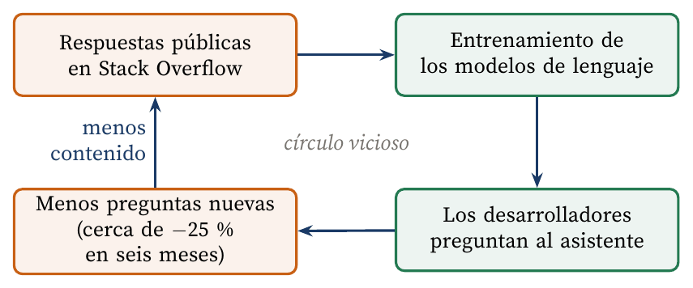

Cuando la fuente de entrenamiento se convierte en víctima
Carlos Luis Rojas Aragonés
Durante más de una década, Stack Overflow fue el sitio de referencia para resolver dudas de programación. Su modelo era sencillo: una comunidad que respondía gratis y un buscador que posicionaba esas respuestas. En 2021, Prosus la compró por 1800 millones de dólares (Stack Overflow, 2021). Un año y medio después llegó ChatGPT.
El efecto fue inmediato. Del Rio-Chanona et al. (2024) estimaron que la actividad en Stack Overflow cayó cerca de un 25 % en los seis meses siguientes al lanzamiento de ChatGPT, frente a plataformas equivalentes en Rusia y China, donde la herramienta no estaba disponible. En octubre de 2023, la empresa despidió al 28 % de su plantilla. La dirección lo atribuyó a la búsqueda de rentabilidad, pero coincidió con esa caída (Chandrasekar, 2023).
El caso encaja con el dilema del innovador (Christensen, 1997). El asistente de IA es «peor» en precisión: alucina y no cita fuentes. Sin embargo, responde al instante, no juzga la pregunta y se adapta al código exacto del desarrollador. Para la mayoría de las dudas cotidianas, eso basta. En la encuesta de la propia Stack Overflow, el 76 % de los desarrolladores ya usaba o planeaba usar herramientas de IA (Stack Overflow, 2024a).
Los modelos aprendieron del contenido de Stack Overflow, y ahora reducen las preguntas nuevas que alimentarían a los modelos futuros (Figura 1). La empresa respondió licenciando sus datos a Google y OpenAI (Stack Overflow, 2024b, 2024c). Es decir, pasó de ser una comunidad a ser un proveedor de datos.

Figura 1. El contenido de la comunidad alimenta a los modelos que luego la sustituyen. Elaboración propia con base en Del Rio-Chanona et al. (2024).
Les dejo una pregunta: si las comunidades abiertas dejan de generar conocimiento, ¿de dónde aprenderán los próximos modelos?
Chandrasekar, P. (2023, 16 de octubre). Stack Overflow company announcement. https://stackoverflow.blog/2023/10/16/stack-overflow-company-announcement-october-2023/
Christensen, C. M. (1997). The innovator's dilemma: When new technologies cause great firms to fail. Harvard Business School Press.
Del Rio-Chanona, R. M., Laurentsyeva, N. y Wachs, J. (2024). Large language models reduce public knowledge sharing on online Q&A platforms. PNAS Nexus, 3(9). https://doi.org/10.1093/pnasnexus/pgae400
Stack Overflow. (2021, 2 de junio). Prosus to acquire Stack Overflow for US$1.8 billion. https://stackoverflow.co/company/press/archive/prosus-acquisition/
Stack Overflow. (2024a). 2024 Developer Survey: AI. https://survey.stackoverflow.co/2024/ai
Stack Overflow. (2024b, 29 de febrero). Stack Overflow and Google Cloud announce strategic partnership to bring generative AI to millions of developers. https://stackoverflow.co/company/press/archive/google-cloud-strategic-gen-ai-partnership/
Stack Overflow. (2024c, 6 de mayo). Stack Overflow and OpenAI partner to strengthen the world's most popular large language models. https://stackoverflow.co/company/press/archive/openai-partnership